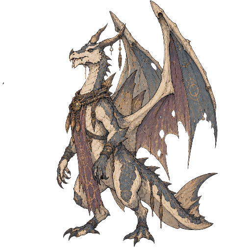
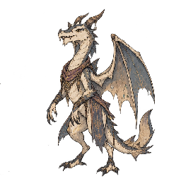
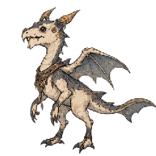

ドラゴン
- 捕獲率
- 10
- 経験値
- 45
進化
進化元

アークウィルムレベル進化ドラフト覚える技
| 習得 | 技 | タイプ | 威力 | 命中 | PP | 分類 |
|---|---|---|---|---|---|---|
| Lv.1 | Always Forty Damage | ドラゴン | 0 | 100 | 10 | 特殊 |
| Lv.2 | Tail Wag | ノーマル | 0 | 100 | 30 | 変化 |
| Lv.3 | Brute Force Slam | ノーマル | 80 | 75 | 20 | 物理 |
| Lv.4 | Strong Mind Power | エスパー | 55 | 100 | 10 | 特殊 |
| Lv.5 | Body Drop | ノーマル | 85 | 100 | 15 | 物理 |
| Lv.6 | Rainbow Ray | こおり | 65 | 100 | 20 | 特殊 |
| Lv.9 | Ice Ray | こおり | 90 | 100 | 10 | 特殊 |
| Lv.10 | Charge Wind Cutter | ノーマル | 80 | 100 | 10 | 特殊 |
ドラフトのため、カウンター情報は暫定です。
カウンターできる相手
 Apprentice Fist弱点を突ける技
Apprentice Fist弱点を突ける技Strong Mind Power（エスパー）で弱点2倍
 Blooming Frog弱点を突ける技
Blooming Frog弱点を突ける技Ice Ray（こおり）で弱点2倍（ほか1件）
 Dirt Burrower弱点を突ける技
Dirt Burrower弱点を突ける技Ice Ray（こおり）で弱点2倍（ほか1件）
 Green Frog弱点を突ける技
Green Frog弱点を突ける技Ice Ray（こおり）で弱点2倍（ほか1件）
 Leaping Frog弱点を突ける技
Leaping Frog弱点を突ける技Ice Ray（こおり）で弱点2倍（ほか1件）
 Master Fist弱点を突ける技
Master Fist弱点を突ける技Strong Mind Power（エスパー）で弱点2倍
 Normal Pidgeon弱点を突ける技
Normal Pidgeon弱点を突ける技Ice Ray（こおり）で弱点2倍（ほか1件）
 Poison Pouch弱点を突ける技
Poison Pouch弱点を突ける技Strong Mind Power（エスパー）で弱点2倍
 Poison Smoke Pouch弱点を突ける技
Poison Smoke Pouch弱点を突ける技Strong Mind Power（エスパー）で弱点2倍
 Stately Pidgeon弱点を突ける技
Stately Pidgeon弱点を突ける技Ice Ray（こおり）で弱点2倍（ほか1件）
- アークウィルム弱点を突ける技
Ice Ray（こおり）で弱点2倍（ほか1件）

ウィルム弱点を突ける技Ice Ray（こおり）で弱点2倍（ほか1件）
 ケンタルン弱点を突ける技
ケンタルン弱点を突ける技Ice Ray（こおり）で弱点2倍（ほか1件）
 サジタウル弱点を突ける技
サジタウル弱点を突ける技Ice Ray（こおり）で弱点2倍（ほか1件）
 レッチウィード弱点を突ける技
レッチウィード弱点を突ける技Ice Ray（こおり）で弱点2倍（ほか1件）
 レッチドガーデンウィード弱点を突ける技
レッチドガーデンウィード弱点を突ける技Ice Ray（こおり）で弱点2倍（ほか1件）
カウンターされる相手
 Frozen Orbタイプ一致の弱点攻撃
Frozen Orbタイプ一致の弱点攻撃Ice Storm（こおり）で弱点2倍（ほか2件）
- アークウィルム弱点を突ける技
Rainbow Ray（こおり）で弱点2倍
変更履歴
sha256:27d60cd31…現在初回記録